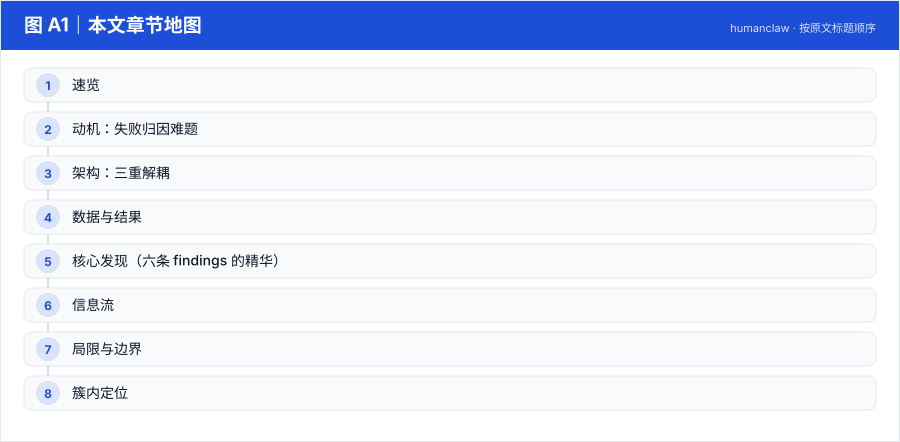
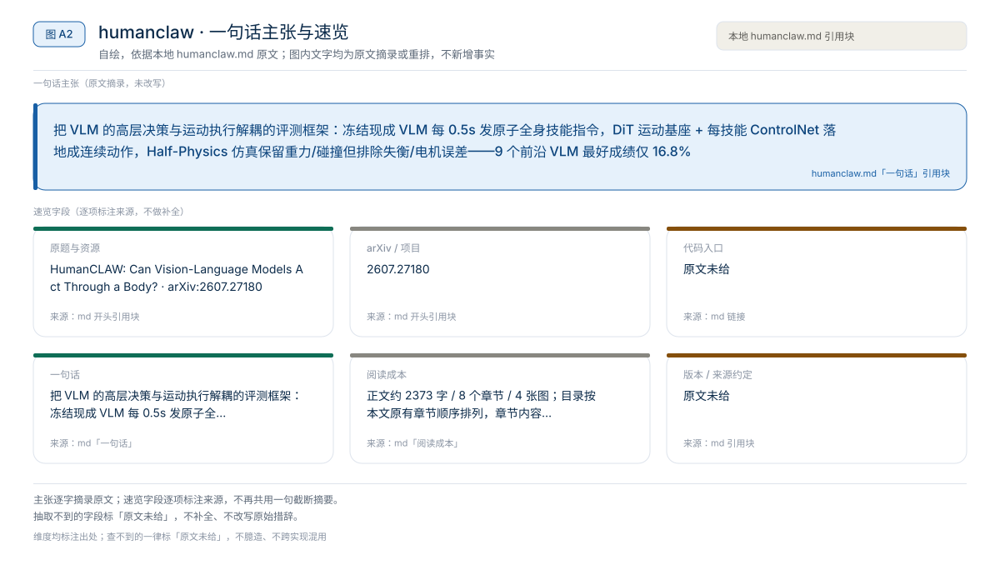
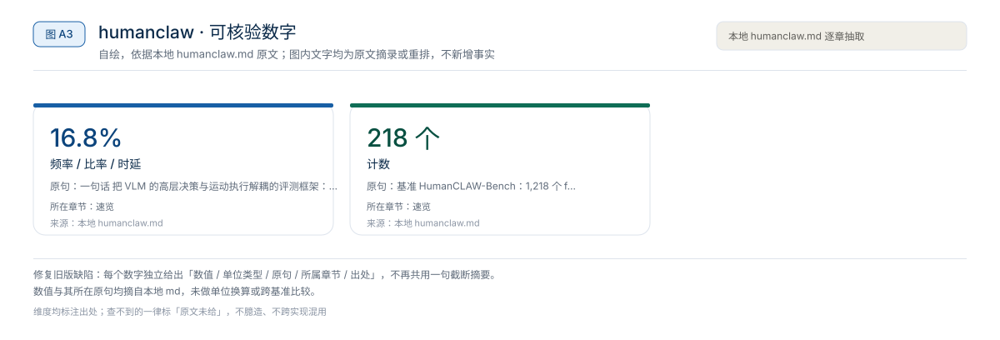
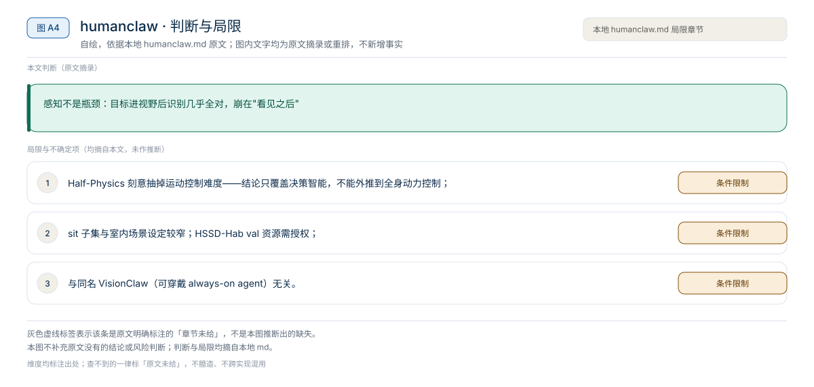

【Harness VLA · 代码即策略与技能发现】RAX 深读：把在线探索做成 Scaling Law，五大基准平均领先 37.4 个点
冻结通用 coding agent 直接连机器人感知/控制接口，把"在线探索"做成 scaling law：成功决策编译成程序、版本化入库，能力随探索预算单调增长
Harness01-代码即策略与技能发现2026
把 VLM 的高层决策与运动执行解耦的评测框架：冻结现成 VLM 每 0.5s 发原子全身技能指令，DiT 运动基座 + 每技能 ControlNet 落地成连续动作，Half-Physics 仿真保留重力/碰撞但排除失衡/电机误差——9 个前沿 VLM 最好成绩仅 16.8%
原题与资源：HumanCLAW: Can Vision-Language Models Act Through a Body? · arXiv:2607.27180
一句话：把 VLM 的高层决策与运动执行解耦的评测框架：冻结现成 VLM 每 0.5s 发原子全身技能指令，DiT 运动基座 + 每技能 ControlNet 落地成连续动作，Half-Physics 仿真保留重力/碰撞但排除失衡/电机误差——9 个前沿 VLM 最好成绩仅 16.8%
阅读成本：正文约 2373 字 / 8 个章节 / 4 张图；目录按本文原有章节顺序排列，章节内容未改动。
目录（点击跳到对应章节）：

图 A1：本文章节地图（节点即原文 h2 标题）。自绘，依据本文，不新增事实。
| 项 | 内容 |
|---|---|
| 一句话 | 把 VLM 的高层决策与运动执行解耦的评测框架：冻结现成 VLM 每 0.5s 发原子全身技能指令，DiT 运动基座 + 每技能 ControlNet 落地成连续动作，Half-Physics 仿真保留重力/碰撞但排除失衡/电机误差——9 个前沿 VLM 最好成绩仅 16.8% |
| 冻结 | 全部被测 VLM（决策者）；运动基座 DiT + ControlNet（执行器，固定） |
| 演化 | 无——这是评测 harness，测的是 action intelligence |
| 基准 | HumanCLAW-Bench：1,218 个 find-navigate-interact 长程第一人称回合，41 个 HSSD 室内场景 |

图 A2：一句话主张与速览字段。自绘，依据本文，不新增事实。

图 A3：本文可核验的数字摘录。自绘，依据本文，不新增事实。
一个具体任务走一遍 · 本文可核验数字与字段速查（以下均摘自原文，未作推算）：
| 模块 | 职责 |
|---|---|
| VLM skill harness | 渐进式推理脚手架：自我中心感知 → 空间理解 → 动态中级目标（2–3s）→ 原子技能+参数（walk(x,z,ψ)、sit_in_place(h)…）；0.5s 一步 |
| Verifier | 短上下文 spatial-action outcome QA；accept / reject / renew，拦下不安全或物理不可能的提案 |
| DiT 运动生成 | 技能无关的运动基座 DiT（5 历史姿态 → 15 未来帧 continuation）+ 每技能即插即用 ControlNet 适配器 → 百自由度连续全身运动 |
| Half-Physics 仿真 | 基于 AI Habitat + Bullet：保留重力、碰撞、物体位移等物理后果；用等价运动学速度驱动身体，排除失衡与电机跟踪误差 → 失败必然是决策失败 |
人形运动技能保真度（log-prob 比值，越接近 1 越好）：
| 技能 | HumanCLAW | MoMask |
|---|---|---|
| walk | 0.966 ±0.022 | 1.921 ±1.031 |
| side_step | 1.002 ±0.123 | 1.717 ±1.234 |
| step_back | 0.986 ±0.056 | 2.072 ±1.067 |
| turn_in_place | 0.994 ±0.038 | 0.608 ±0.284 |
| climb_upstairs | 0.794 ±0.019 | 0.820 ±0.826 |
| climb_downstairs | 0.738 ±0.052 | 1.540 ±0.421 |
| sit_in_place | 0.977 ±0.078 | 1.817 ±1.279 |
HumanCLAW 是评测框架，无传统消融表；其"消融"是技能级验证规则表：walk（路径碰撞/目标推进）、stop（目标完成/身体到位）、climb up/down（台阶在脚下/朝向楼梯）、turn before sitting（贴座零距离/转向后座椅在正后方）——每个技能有专属可执行检查，而非通用 VLM 评分。
高层指令 + 技能注册表 → VLM harness（0.5s 步）
← 自我中心 RGB + 文本/结构化记忆
→ 原子技能提案 → verifier 校验（reject 则重提案）
→ DiT + skill ControlNet → 全身 motion chunk
→ Half-Physics 执行（重力/碰撞生效）→ 新 ego 帧 → 循环本文判断：感知不是瓶颈：目标进视野后识别几乎全对，崩在"看见之后"
局限与不确定项（以下均摘自本文，未作推断）：

图 A4：局限与不确定项摘录。自绘，依据本文，不新增事实。
覆盖范围：本页新增的导读、目录、章节地图、数字卡与局限清单，均为原文信息的重排或摘录；正文、数据与实验结论未改动。